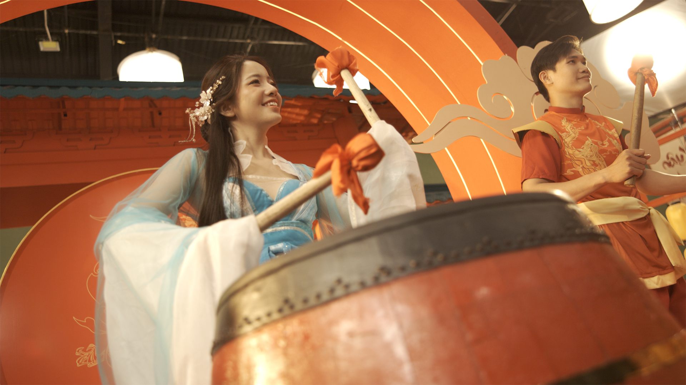

2026
TaiPT2 - VFX Compositing Artist
Danh sách dự án


JX Tết 2026
TaiPT — VFX Compositing Artist · Shot Report
Shots phụ trách
19
/ 48 tổng số shots
Tỷ lệ đảm nhận
40%
of total project
Frames
1,862
/ 4,104 total frames
Completion
100%
27 / 27 tasks done
AI Prep
100%
AI Rotoscoping
Phân bổ hạng mục
Tiến độ hoàn thành
Tasks completed — 27 / 27
Shots completed — 19 / 19
Frames delivered — 1,862f
| # | Shot | Frames | Task | Role | Status |
|---|---|---|---|---|---|
| 01 | 11 | 59f | Matte Painting | RotoAI PrepComp | Done |
| 02 | 15 | 191f | Cây Đào 3D · Matte Painting · Hoa bay | Comp | Done |
| 03 | 16 | 87f | Cây Đào 3D · Ngựa CGI · Hoa bay · Matte Painting | Comp | Done |
| 04 | 17 | 100f | Cây Đào 3D · Cánh hoa rơi · Matte Painting | Comp | Done |
| 05 | 19 | 105f | Matte Painting · Particles | RotoAI PrepTrackComp | Done |
| 06 | 24 | 56f | Matte Painting · Transition | RotoAI Prep | Done |
| 07 | 25 | 74f | Comp dùi trống | RotoAI PrepComp | Done |
| 08 | 26 | 27f | Matte Painting · Comp nước văng lên | TrackComp | Done |
| 09 | 27 | 85f | Matte Painting · FX sóng âm | Comp | Done |
| 10 | 29 | 55f | Matte Painting · FX sóng âm · Comp nước văng | TrackComp | Done |
| 11 | 30 | 55f | Matte Painting · FX sóng âm | TrackComp | Done |
| 12 | 31 | 145f | Matte Painting · Sim nước · Ingame | TrackComp | Done |
| 13 | 32 | 90f | BG 3D | RotoAI Prep | Done |
| 14 | 35 | 60f | Full CGI | Comp | Done |
| 15 | 36 | 94f | BG 3D · Matte Painting | RotoAI Prep | Done |
| 16 | 37 | 32f | Full CGI · Matte Painting | Comp | Done |
| 17 | 41 | 57f | Full CGI | Comp | Done |
| 18 | 45 | 170f | BG 3D | Comp | Done |
| 19 | 46 | 376f | Full CGI | Comp | Done |
JX Tết 2026 · Main TVC Shotlist · DnD Studio — VNGGames

Breakdown
TVC JX-Tết 2026

KTO TVC PBM 03/2026
TaiPT — VFX Compositing Artist · Shot Report
Shots phụ trách
32
/ 32 tổng số shots
Tỷ lệ đảm nhận
100%
of total project
Frames
?
/ ? total frames
Completion
100%
36 tasks done
AI Prep
100%
AI Segmentation
Phân bổ hạng mục
Tiến độ hoàn thành
Tasks completed — 36/36
Shots completed — 32/32
Frames delivered — ?f
| # | Shot | Frames | Task | Role | Status |
|---|---|---|---|---|---|
| Color Grading · Shot 1 – 32 | |||||
| 01 | 1 | — | Color Grading | Color | Done |
| 02 | 2 | — | Color Grading | Color | Done |
| 03 | 3 | — | Color Grading | Color | Done |
| 04 | 4 | — | Color Grading | Color | Done |
| 05 | 5 | — | Color Grading | Color | Done |
| 06 | 6 | — | Color Grading | Color | Done |
| 07 | 7 | — | Color Grading | Color | Done |
| 08 | 8 | — | Color Grading | Color | Done |
| 09 | 9 | — | Color Grading | Color | Done |
| 10 | 10 | — | Color Grading | Color | Done |
| 11 | 11 | — | Color Grading | Color | Done |
| 12 | 12 | — | Color Grading | Color | Done |
| 13 | 13 | — | Color Grading | Color | Done |
| 14 | 14 | — | Color Grading | Color | Done |
| 15 | 15 | — | Color Grading | Color | Done |
| 16 | 16 | — | Color Grading | Color | Done |
| 17 | 17 | — | Color Grading | Color | Done |
| 18 | 18 | — | Color Grading | Color | Done |
| 19 | 19 | — | Color Grading | Color | Done |
| 20 | 20 | — | Color Grading | Color | Done |
| 21 | 21 | — | Color Grading | Color | Done |
| 22 | 22 | — | Color Grading | Color | Done |
| 23 | 23 | — | Color Grading | Color | Done |
| 24 | 24 | — | Color Grading | Color | Done |
| 25 | 25 | — | Color Grading · Remove | ColorComp | Done |
| 26 | 26 | — | Color Grading | Color | Done |
| 27 | 27 | — | Color Grading · Remove | ColorComp | Done |
| 28 | 28 | — | Color Grading · Remove | ColorComp | Done |
| 29 | 29 | — | Color Grading | Color | Done |
| 30 | 30 | — | Color Grading · Remove | ColorComp | Done |
| 31 | 31 | — | Color Grading | Color | Done |
| 32 | 32 | — | Color Grading | Color | Done |
KTO TVC PBM 03/2026 · Main TVC Shotlist · DnD Studio — VNGGames

JX2.0 TVC PBM 2026
TaiPT — VFX Compositing Artist · Shot Report
Shots phụ trách
34
/ 34 tổng số shots
Tỷ lệ đảm nhận
100%
of total project
Frames
?
/ ? total frames
Completion
100%
34 tasks done
Phân bổ hạng mục
Tiến độ hoàn thành
Tasks completed — 34/34
Shots completed — 34/34
Frames delivered — ?f
| # | Shot | Frames | Task | Role | Status |
|---|---|---|---|---|---|
| Color Grading · Shot 1 – 34 | |||||
| 01 | 1 | — | Color Grading | Color | Done |
| 02 | 2 | — | Color Grading | Color | Done |
| 03 | 3 | — | Color Grading | Color | Done |
| 04 | 4 | — | Color Grading | Color | Done |
| 05 | 5 | — | Color Grading | Color | Done |
| 06 | 6 | — | Color Grading | Color | Done |
| 07 | 7 | — | Color Grading | Color | Done |
| 08 | 8 | — | Color Grading | Color | Done |
| 09 | 9 | — | Color Grading | Color | Done |
| 10 | 10 | — | Color Grading | Color | Done |
| 11 | 11 | — | Color Grading | Color | Done |
| 12 | 12 | — | Color Grading | Color | Done |
| 13 | 13 | — | Color Grading | Color | Done |
| 14 | 14 | — | Color Grading | Color | Done |
| 15 | 15 | — | Color Grading | Color | Done |
| 16 | 16 | — | Color Grading | Color | Done |
| 17 | 17 | — | Color Grading | Color | Done |
| 18 | 18 | — | Color Grading | Color | Done |
| 19 | 19 | — | Color Grading | Color | Done |
| 20 | 20 | — | Color Grading | Color | Done |
| 21 | 21 | — | Color Grading | Color | Done |
| 22 | 22 | — | Color Grading | Color | Done |
| 23 | 23 | — | Color Grading | Color | Done |
| 24 | 24 | — | Color Grading | Color | Done |
| 25 | 25 | — | Color Grading | Color | Done |
| 26 | 26 | — | Color Grading | Color | Done |
| 27 | 27 | — | Color Grading | Color | Done |
| 28 | 28 | — | Color Grading | Color | Done |
| 29 | 29 | — | Color Grading | Color | Done |
| 30 | 30 | — | Color Grading | Color | Done |
| 31 | 31 | — | Color Grading | Color | Done |
| 32 | 32 | — | Color Grading | Color | Done |
| 33 | 33 | — | Color Grading | Color | Done |
| 34 | 34 | — | Color Grading | Color | Done |
JX2.0 TVC PBM 2026 · Main TVC Shotlist · DnD Studio — VNGGames